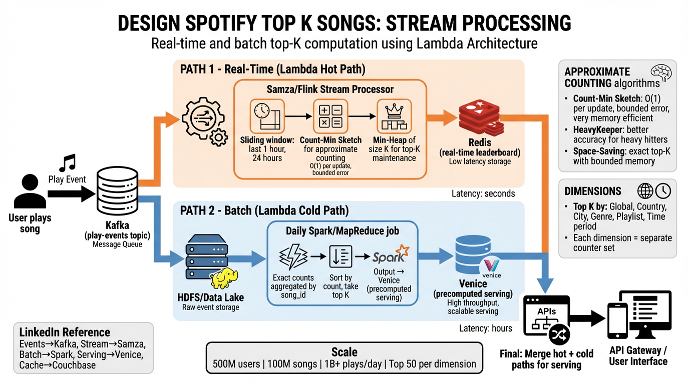

Real-time and batch computation of the most-played songs across hundreds of millions of users — approximate counting, Lambda architecture, and multi-dimensional leaderboards at scale.
The Top K Songs problem asks us to build a system that continuously computes the most-played songs across a massive streaming platform. Unlike simple counters, we need real-time freshness (charts update within minutes), exact historical accuracy (daily/weekly official charts), and multi-dimensional slicing (by country, genre, playlist, and time window).
GET /top-k?dimension=country&value=US&k=50 and receive an ordered list.GET /v1/charts/top-k
?dimension=country // global | country | city | genre | playlist
&value=US // dimension value (omit for global)
&k=50 // number of results (max 100)
&period=realtime // realtime | daily | weekly | monthly
&date=2025-04-06 // for historical charts
Response:
{
"dimension": "country",
"value": "US",
"k": 50,
"period": "realtime",
"updated_at": "2025-04-06T14:32:01Z",
"songs": [
{ "rank": 1, "song_id": "s_abc123", "title": "...", "artist": "...", "play_count": 2847193 },
{ "rank": 2, "song_id": "s_def456", "title": "...", "artist": "...", "play_count": 2691042 },
...
]
}
We adopt a Lambda Architecture to get the best of both worlds: the hot path provides sub-minute freshness using approximate counting, while the cold path computes exact counts in batch. A serving layer merges both views to give users accurate, near-real-time results.

user_id, song_id, timestamp, country, city, genre_ids[], and playlist_id. Events are published to a Kafka topic partitioned by song_id for ordering.user_id + song_id) drops duplicate plays within a 30-second tumbling window. This prevents repeat-play fraud from inflating counts.GROUP BY song_id aggregation, deduplicates, and writes official chart data to Venice (LinkedIn’s derived data store).The stream processor maintains in-memory data structures per partition:
d=5 hash functions and w=10,000 buckets — only ~200 KB of memory per dimension.// Pseudocode: Samza stream task for real-time Top-K
class TopKStreamTask implements StreamTask {
CountMinSketch cms; // d=5, w=10000
MinHeap<SongCount> heap; // capacity = K = 50
void process(IncomingMessageEnvelope msg) {
PlayEvent e = deserialize(msg);
cms.add(e.songId);
long estimatedCount = cms.estimate(e.songId);
if (heap.size() < K) {
heap.insert(new SongCount(e.songId, estimatedCount));
} else if (estimatedCount > heap.peekMin().count) {
heap.replaceMin(new SongCount(e.songId, estimatedCount));
}
}
void onTimer() { // every 30s
redis.set("topk:global:realtime", heap.toSortedList(), TTL=300s);
}
}
The batch layer runs once daily (or hourly for faster convergence) and computes exact play counts:
SELECT DISTINCT user_id, song_id, date to eliminate intra-day duplicates (a user playing the same song 100 times counts as 1 per day for official charts).GROUP BY song_id, dimension with exact COUNT(*).ROW_NUMBER() OVER (PARTITION BY dimension ORDER BY count DESC) ≤ 50dimension:value:period → [ranked song list].-- Spark SQL: Daily Top-K per country
WITH deduped AS (
SELECT DISTINCT user_id, song_id, country, date
FROM play_events
WHERE date = '2025-04-06'
),
counts AS (
SELECT song_id, country, COUNT(*) AS play_count
FROM deduped
GROUP BY song_id, country
),
ranked AS (
SELECT *, ROW_NUMBER() OVER (
PARTITION BY country ORDER BY play_count DESC
) AS rank
FROM counts
)
SELECT * FROM ranked WHERE rank <= 50;
For a query like “Top 50 in the US right now,” the serving layer performs:
merged_count = batch_count + realtime_delta.This gives us exact historical accuracy with near-real-time freshness. The approximation error from the CMS only affects the “today’s delta” portion, which is bounded by the CMS error guarantee: ε ≤ e/w ≈ 0.03% over-count.
With 100M unique songs and 1B+ events/day, maintaining exact per-song counters in the hot path would require massive memory and cross-partition coordination. Approximate counting algorithms let us estimate frequencies with bounded error using orders-of-magnitude less memory.
A Count-Min Sketch is a 2D array of counters with dimensions d × w, where d = number of independent hash functions and w = width (number of buckets per row).
Bucket 0 Bucket 1 Bucket 2 ... Bucket w-1
+----------+----------+----------+-------+----------+
h1(x) | 3 | 0 | 12 | ... | 7 |
+----------+----------+----------+-------+----------+
h2(x) | 5 | 8 | 0 | ... | 2 |
+----------+----------+----------+-------+----------+
h3(x) | 1 | 0 | 9 | ... | 4 |
+----------+----------+----------+-------+----------+
h4(x) | 0 | 11 | 3 | ... | 6 |
+----------+----------+----------+-------+----------+
h5(x) | 7 | 2 | 0 | ... | 1 |
+----------+----------+----------+-------+----------+
Add(song_id): For each row i, compute h_i(song_id) mod w and increment that cell.
Estimate(song_id): Return min(counter[i][h_i(song_id)]) for i in 1..d. The minimum across rows eliminates most collision noise.
Guarantees:
1 - δ, the estimate is at most ε · N above the true count, where ε = e/w and δ = e^(-d).O(d × w) counters. With d=5, w=10,000 and 4-byte counters = 200 KB.HeavyKeeper combines a Count-Min Sketch with fingerprint + decay to focus accuracy on the most frequent items (exactly what we need for Top-K):
(fingerprint, counter) instead of just a counter.b^(-counter) (exponential decay), so low-frequency items are gradually evicted.Advantage over CMS: Much higher accuracy for the top items (the ones we actually care about), at the cost of slightly worse accuracy for tail items (which we don’t need).
Space-Saving maintains a fixed-size map of m (item, count) pairs:
min_count + 1.Guarantee: Any item with true frequency > N/m is guaranteed to be in the map. Error per item is at most N/m.
Drawback: Requires maintaining a sorted structure; harder to parallelize across partitions compared to CMS which is trivially mergeable.
| Algorithm | Space | Error Type | Mergeable? | Best For |
|---|---|---|---|---|
| Count-Min Sketch | O(d × w) — ~200 KB | One-sided (over-count) | Yes (cell-wise add) | General frequency estimation |
| HeavyKeeper | O(d × w) — ~400 KB | One-sided, focused on top items | Partially (fingerprint conflicts) | Top-K heavy hitters specifically |
| Space-Saving | O(m) entries — ~few KB | Bounded two-sided | No (requires full merge) | Small K, single-node |
| Count-Min Sketch + Min-Heap | O(d×w + K) — ~200 KB | One-sided (over-count) | Yes | Distributed top-K (our choice) |
| Exact HashMap | O(n) — ~800 MB for 100M songs | None | Yes (merge maps) | Batch/cold path only |
We chose Count-Min Sketch + Min-Heap because: (1) CMS sketches are trivially mergeable — just add corresponding cells — making them ideal for distributed stream processing with multiple Samza partitions; (2) the one-sided error guarantee means we never miss a true top-K song (we might include a borderline song that doesn’t belong, but we never exclude one that does); (3) memory footprint is ~200 KB per dimension, allowing us to track dozens of dimensions per task instance.
Users don’t just want “global top 50” — they want charts sliced by geography, genre, playlist context, and time. Each dimension requires its own set of counters.
| Dimension | Cardinality | Counter Sets | Memory (CMS per set) | Total Memory |
|---|---|---|---|---|
| Global | 1 | 1 | 200 KB | 200 KB |
| Country | ~200 | 200 | 200 KB | ~40 MB |
| City | ~5,000 (top cities) | 5,000 | 100 KB (smaller w) | ~500 MB |
| Genre | ~50 | 50 | 200 KB | ~10 MB |
| Playlist | ~10,000 (curated) | 10,000 | 50 KB (smaller w) | ~500 MB |
| Time Period | 3 (hourly/daily/weekly) | 3 × other dims | Shared with above | ~3× overhead |
Each play event fans out to multiple counter sets. A single play of song X by a user in New York, USA on a Pop playlist updates:
global CMS — 1 updatecountry:US CMS — 1 updatecity:new_york CMS — 1 updategenre:pop CMS — 1 update (per genre tag)playlist:p_xyz CMS — 1 updateThat’s ~5 CMS updates per event. At 50K events/sec peak, that’s 250K CMS increment operations/sec — trivially fast since each is just d=5 array increments in memory.
We partition the stream processing by dimension type:
Redis keys follow the pattern: topk:{dimension}:{value}:{period}
topk:global::realtime → [song1, song2, ..., song50] topk:country:US:realtime → [song1, song2, ..., song50] topk:city:new_york:realtime → [song1, song2, ..., song50] topk:genre:pop:daily → [song1, song2, ..., song50]
Approximate counting is perfect for “what’s trending right now?” — users don’t notice if the #47 song is actually #48. But for official weekly charts that determine royalty payouts, we need exact counts. The Lambda Architecture gives us both without compromise.
Top-K requires both approximate (fast) and exact (correct) results simultaneously. Kappa would need to maintain exact counts in the stream layer, which defeats the memory advantage of approximate algorithms. Lambda lets us use CMS in the hot path (200 KB) while Spark handles exact counts in batch (with disk-backed shuffles for 100M songs).
A naive top-K counts all plays equally, so an old hit with millions of historical plays dominates forever. Time-decay weighting ensures charts reflect current trends:
weighted_count(song) = ∑ play_i × decay(now - timestamp_i)
// Exponential decay with half-life of 4 hours:
decay(age) = 2^(-age / half_life)
// A play from:
// 0 min ago → weight 1.0
// 4 hrs ago → weight 0.5
// 8 hrs ago → weight 0.25
// 24 hrs ago → weight 0.016
Implementation: Instead of storing raw counts in the CMS, store weighted counts. On each event, increment by 1.0. Periodically (every hour), multiply all cells by the decay factor 2^(-1/half_life_hours). This is equivalent to exponential smoothing and prevents stale songs from lingering.
| Approach | Pros | Cons |
|---|---|---|
| Tumbling Windows (e.g., last 1 hour) | Simple; clear boundary; no drift | Abrupt changes at window boundaries; a song can “fall off a cliff” |
| Sliding Windows (last 1 hour, updated every minute) | Smoother transitions | Expensive: must store per-minute counts and re-aggregate |
| Exponential Decay (our choice) | Smooth; single counter per item; no window management | Slightly harder to reason about; half-life tuning required |
| Component | LinkedIn Equivalent | Role in Top-K |
|---|---|---|
| Message Queue | Kafka | Play event ingestion; partitioned by song_id; source of truth for both hot and cold paths |
| Stream Processor | Samza | Real-time CMS + Min-Heap updates; stateful processing with RocksDB local store; exactly-once via Kafka offsets |
| Batch Processor | Spark | Nightly/hourly exact aggregation; GROUP BY with disk-backed shuffle; outputs to Venice |
| Derived Data Store | Venice | Batch-computed exact charts; versioned key-value store; low-latency reads for serving layer |
| Real-Time Cache | Couchbase | Replaces Redis in LinkedIn stack; stores real-time top-K lists; TTL-based expiry; sub-ms reads |
| ML & Personalization | Pro-ML | Personalized chart blending (mix global popularity with user taste); feature serving for ranking models |
The hot path (Samza + CMS) detects it within 30 seconds. The CMS count grows rapidly, pushing the song into the Min-Heap. Redis is updated on the next flush cycle (30s). Total detection latency: < 1 minute. The batch path will confirm the exact count in the next run.
This is the false-positive risk of CMS (it over-counts, never under-counts). Mitigation: (1) Use d=5 hash functions, which makes collision across all 5 rows astronomically unlikely for songs below 0.03% of total plays; (2) The batch path corrects any such errors within hours; (3) HeavyKeeper can replace CMS if collision rate is unacceptable for the hot path.
Each dimension set is a separate CMS (~200 KB). For 200 countries = 40 MB; for 5,000 cities with reduced sketch width = 500 MB. This fits in a single Samza container (2–4 GB heap). For more dimensions, shard by dimension type across separate Samza jobs with their own Kafka consumer groups.
At 50K events/sec peak, Redis ZINCRBY with 100M members in a sorted set would create enormous write amplification (O(log N) per update where N=100M). The CMS approach does O(d) = O(5) in-memory operations per event with no network I/O until the 30-second flush. Redis is only used for the final top-50 list, not per-event counting.
Three layers: (1) Dedup gate — same user + same song within 30 seconds is dropped; (2) Rate limiting — if a user generates > 100 play events/hour, flag and throttle; (3) Offline ML model — batch job identifies anomalous play patterns (e.g., 1000 accounts in the same IP range playing the same song) and removes fraudulent plays before official chart computation.
Each datacenter runs its own hot path (Samza + local CMS). Sketches from different datacenters are merged (CMS addition is commutative and associative) at the serving layer, or a single global Kafka cluster is used with regional consumers. For the cold path, all events are replicated to a single HDFS cluster for unified batch processing.